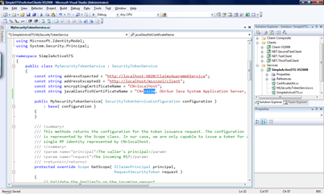

In October I published a posting on Identity Interoperability based on a PoC I created of TechEd Europe Developers 2008 and our local DevCamp 2008 conference. The prototype was based on Codename "Zermatt" on the Microsoft-side and on NetBeans 6.5 Beta 2 as well as Metro 1.3 / WSIT Beta at this point of time... As I had to demonstrate the prototype within a customer engagement I updated the stuff to Microsoft Geneva Framework Beta 1, Netbeans 6.5 RTM and Metro 1.3 / WSIT RTW. Well, there have been some changes which essentially where driving me crazy... therefore I thought I'll give you an update and show, how you can make identity interoperability reality between those platforms with
- an active STS based on Geneva Framework Beta 1
- a .NET-based client using WCF of .NET Framework 3.5 SP1
- a Java-based relying party implemented with Netbeans 6.5 RTM and Metro 1.3 RTW
Again I will discuss all the necessary details for making my samples running on your machine...
Sample Downloads for this posting
First of all, download the samples for this posting which I've updated from Zermatt to Geneva Framework Beta 1 and from Netbeans Beta to Netbeans 6.5 release and Metro 1.3 / WSIT RTW here:
Pre-Requisites
Before you can begin with the action make sure you download and extract the following packages to your local machine. I use the directory "D:\IdentityInterop2008" as a base directory... when you see this in one of the screen-shots map to your local base directory!
- Microsoft-side
- Java-side
- Java SDK (5 or 6)
- Netbeans 6.5 RTM
- Java Metro 1.3 RTM
- Dom4J 1.x (I have used this one)
- Jaxen (which is a pre-requisite for dom4j)
- Java Cryptography Extensions with support for higher bit-rates
Code Changes from Zermatt to Geneva Beta 1
I had to update my code as there are some not very well documented changes from Zermatt to Geneva Framework Beta 1;) There are two cool blog postings by Yossi Dahan summarizing the breaking changes:
http://www.sabratech.co.uk/blogs/yossidahan/2008/11/from-to-framework.html
http://www.sabratech.co.uk/blogs/yossidahan/2008/11/from-to-framework-part-ii.html
The download of this post also contains the updates of my demos from TechEd Europe 2008 developers...
Installing the Pre-Requisites on Java
As for the .NET-side the installation-process is pretty straight-forward (install Visual Studio and it's SP1 which includes .NET and then install Geneva Framework and you're done;)) I just outline, what you have to do on the Java-side to make things working...
- Install Netbeans and install all Netbeans updates. Very important: install Glassfish v2 with Netbeans as well.
- Install the Java Cryptopraphy Extensions policy files. for this purpose extract the JCE download and copy it to the files to the following directories:
C:\Program Files\Java\jre1.5.0_15\lib\security
and C:\Program Files\Java\jdk1.5.0_15\jre\lib\security
- Make sure that the Glassfish v2 server is configured within your Netbeans 6.5 IDE as outlined in my previous post on this topic.
- TRICKY if you've been working with Netbeans beta or RC: in the beta or RC versions of netbeans, the option for selecting .NET 3.5 / Metro compatibility and therefore enforcing the correct WS-* standard versions for the messaging are simply not available... no update install, nothing worked. The reason is very simple: Netbeans pre-releases were shipping with Metro while the RTM of Netbeans 6.5 does not ship with Metro 1.3, anymore...
As you can see, the interoperability option is disabled because Metro is not installed on my Glassfish instance. Therefore we need to install Metro. Unfortunately the documentation on how-to "install" Metro is pretty confusing. It tells to execute an ant-script that installs metro as you can see in the following screen-shot:
That means in a command prompt where I have all the Java environment variables set I execute the following statement:
<antdir>\ant <workdir>\metro\metro-on-glassfish.xml install
After you've executed this command while neither Netbeans nor Glassfish is running and you restart Netbeans, the .NET compatibility option should be available as follows:
Make the .NET-side running on your machine
Now that we have anything installed on the machines we can start making things running on your machines. For the Microsoft-side the first step is installing the certificates in the localhost's certificate store. For this purpose follow these steps:
- Start the Microsoft Management Console (Run -> mmc.exe)
- Select "File -> Add/Remove Snap In..."
- In the dialog that fires up select "Certificates" in the left list.
- Select "Computer" and then "Local Computer" in the options for opening the local machine's certificate store.
- Import the certificates "localhost.pfx" and "sts.pfx" into the Machines "My" store by right-clicking "Personal" and selecting "All Tasks -> Import". The password for the PFX-files in my pre-requisites folder is password.
- After you've imported the certificates into the My-Store, your certificate store should look as follows:
![Console1 - [Console RootCertificates (Local Computer)PersonalCertificates] (2)](media/TNBlogsFS/BlogFileStorage/blogs_msdn/mszcool/WindowsLiveWriter/IdentityInteroperability.5Releaseworking_A315/Console1%20-%20%5BConsole%20RootCertificates%20(Local%20Computer)PersonalCertificates%5D%20(2)_thumb.png)
- Import both certificates into the "Trusted People"-store as well so that the certificate validation can succeed!
- Now start Visual Studio 2008 as administrator (so that WCF can register all listeners while debugging) and open the solution <working-directory>\Simple STS For Active Clients\SimpleSTSForActiveClients-VS2008.sln
- For verifying if the Microsoft-side is working, start the projects SimpleActiveSTS-VS2008, ClaimsAwareWebService-VS2008 and NET.TestClient for debugging (or without debugging).
- In the Client enter "net" and press enter. Your screen with the running applications should look as follows:
![Console1 - [Console RootCertificates (Local Computer)PersonalCertificates] (2)](media/TNBlogsFS/BlogFileStorage/blogs_msdn/mszcool/WindowsLiveWriter/IdentityInteroperability.5Releaseworking_A315/Console1%20-%20%5BConsole%20RootCertificates%20(Local%20Computer)PersonalCertificates%5D%20(2)_2.png)
Make the Java-side running on your machine
After you've setup the Java-configuration as outlined before, the only things left are (a) opening and configuring my web service project and (b) configuring the certificates of your Glassfish domain. For this purpose follow these steps to make things running:
- For a default configuration of Netbeans 6.5 installations, the first step is taking a look at where your Glassfish personal domain is going to be executed. For this purpose open Netbeans, switch to the "Servers" tab in your solution explorer / project explorer and view the properties of Glassfish:
- In the dialog appearing you see, where your personal domain is going to be executed. This is important because this directory contains the *.jks files which are the certificate storage in the Java-solutions:
As you can see in the preceeding dialog, my example domain is running in the "D:\Data\.personalDomain" directory. There you will find two files, the cacerts.jks file (trusted certificates) and the keystore.jks (server certificates). - Now that you know these stores, you need to import the STS' certifcate into the cacerts.jks store. For this purpose you import the STS certificate from the file I provide within the "pre-requisites\sts.cer" file as follows from a Java command prompt:
keytool -import -alias sts -file sts.cer -keystore d:\data\.personalDomain\personalDomain\config\cacerts.jks - Next you need to export the Glassfish domain certificate from the keystore.jks file as follows:
keytool -export -alias s1as -file s1as.cer -keystore "d:\Data\.personalDomain\personalDomain\config\keystore.jks" - Finally the in step 4 exported certificate needs to be imported in the Windows certificate store, again into the Trusted People and the My store of the local machine. The following screen-shot shows the imported certificate in the Windows Certificate store highlighted - note that the certificate will be generated during the domain-creation / installation process and will have your machine-name in it's subject.
![Console1 - [Console RootCertificates (Local Computer)Trusted PeopleCertificates]](media/TNBlogsFS/BlogFileStorage/blogs_msdn/mszcool/WindowsLiveWriter/IdentityInteroperability.5Releaseworking_A315/Console1%20-%20%5BConsole%20RootCertificates%20(Local%20Computer)Trusted%20PeopleCertificates%5D_thumb.png)
The "vaiom" certificate is the "s1as.cer" file I previously exported from the keystore.jks Glassfish store. Note that I have imported it into both, the "Personal" and the "Trusted People" store! - Therefore the next step is modifying a line of code in my STS implementation to match the Glassfish' certificate name for encrypting the SAML token. The following screen-shot outlines the place where you need to do that.

As the previous image shows, the string-constant javaGlassfishCertificateName needs to have the full machine-name in the first part of the common name (highlighted in the image). Note that if your machine is joined to a domain you need to enter the full domain name of the machine name as this is the way Glassfish generates the name for these certificates. - Now update the URL for your NET.TestClient project by opening the configuration "app.config" in the project and modifying the URL of the Java-Web service to match your machine-name and the ports used by Glassfish:
- Now start the STS and the NET.TestClient from within Visual Studio (best without debugging by highlighting each of the projects and pressing CTRL-F5).
- Next it's time to start the Netbeans IDE and open the project "<workingdir>\JavaNewService" that I am delivering in the downloads.
- Verify the configuration by right-clicking the TestClaimsBased node in the Web Services node within Netbeans. The configuration should look as follows:
- Now right-click the JavaNewService node in the proejct-explorer of Netbeans and select "Deploy". This should compile the project, start the Glassfish server and deploy the project. The output-window of Glassfish should show the URL where the project is running then as follows:

- Now switch to the running NET.TestClient instance, enter Java and press enter (cross the fingers now;))
- If your client's output looks as follows then you're fine, everything worked very well:
_thumb.png)
- Switch to your Netbeans IDE and open the Glassfish output window. It should have all the claims extracted from the SAML-token in it's output window as follows:
![Console1 - [Console RootCertificates (Local Computer)Trusted PeopleCertificates]](media/TNBlogsFS/BlogFileStorage/blogs_msdn/mszcool/WindowsLiveWriter/IdentityInteroperability.5Releaseworking_A315/Console1%20-%20%5BConsole%20RootCertificates%20(Local%20Computer)Trusted%20PeopleCertificates%5D_2.png)

_2.png)
{kind=link}
{kind=link}
{kind=link}
_2.png){kind=link}
{kind=link}
{kind=link}
{kind=link}
{kind=link}
{kind=link}
_2.png){kind=link}
_2.png){kind=link}
{kind=link}
{kind=link}
{kind=link}
_2.png){kind=link}
Now you're done, everything is fine and the identity-interop experiment was successful... hope you enjoyed it and hope that this helps you in the future in your projects...
Have a nice weekend
Mario